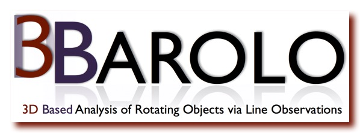

3D-Barolo (3D-Based Analysis of Rotating Object via Line Observations) or BBarolo is a tool for fitting 3D tilted-ring models to emission-line data-cubes. BBarolo can derive the kinematics of any disk-like object, including galaxy disks, circum-nuclear disks, accretion disks and proto-planetary disks, and can be used with any emission line data, like HI, molecular and recombination lines.
October 2023: New BBarolo v1.7 and pyBBarolo v1.3 are now available (release notes). Go immediately to the download page!
HELP WITH THE CODE: if you experience any issue when using BBarolo with your data, or if you are not satisfied with the quality of the fit, PLEASE do not hesitate to contact either Enrico or Filippo for assistance.
October 2023: New BBarolo v1.7 and pyBBarolo v1.3 are now available (release notes). Go immediately to the download page!
HELP WITH THE CODE: if you experience any issue when using BBarolo with your data, or if you are not satisfied with the quality of the fit, PLEASE do not hesitate to contact either Enrico or Filippo for assistance.
